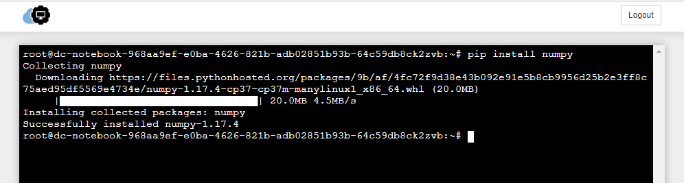
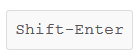
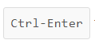
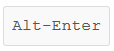
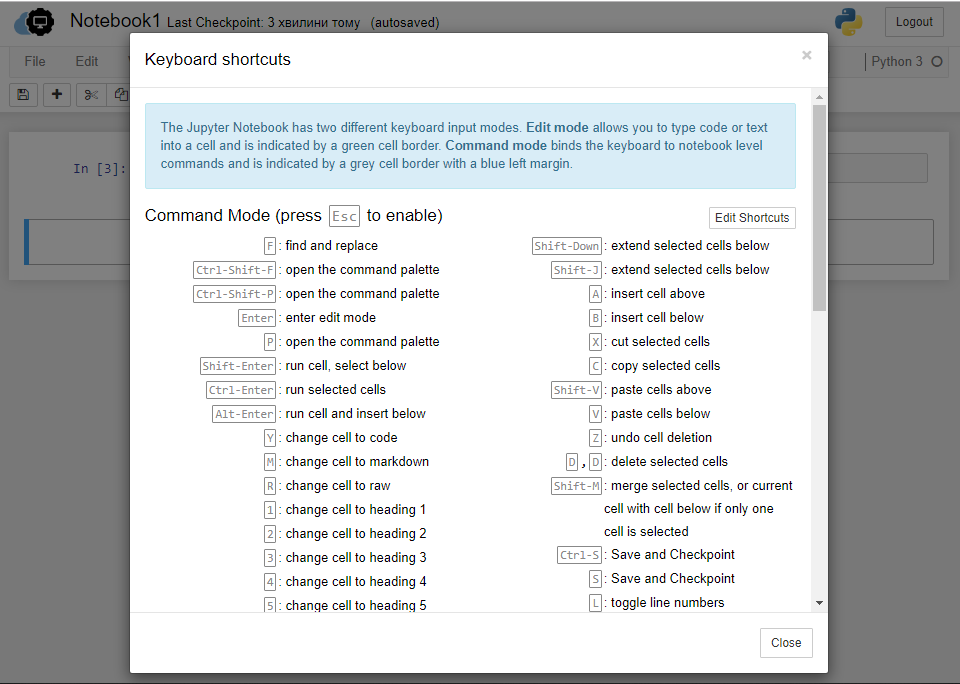
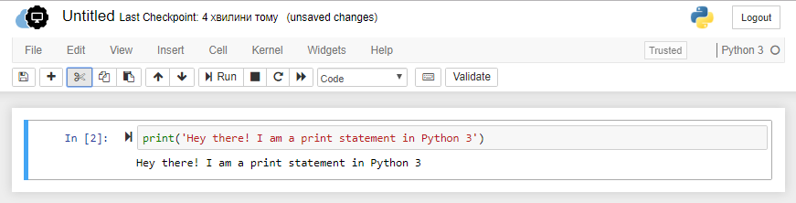
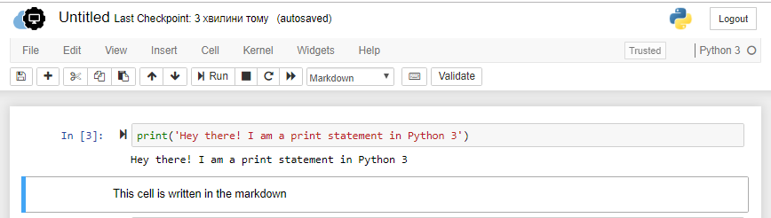

What are cells in a Notebook?¶
Cells are the building block of any Jupyter notebook. Cells operate in two modes: command and edit mode and they are of three types:
- code
- markdown
- and Raw NBConvert
The command mode allows you to manipulate cells. This means the action you perform has to do with the cell as a whole. The command mode is indicated by a grey border around the cell with a blue indication, as shown in the below screenshot.
{kind=link}
When the cell is the command mode, you can perform some of the following operations:
INSERT – key in A to insert a new cell above, and B to insert a new cell below the current cell.
MERGE existing cells – Shift-M allows to merge selected cells or to merge the current cell with the cell below
COPY – C copies selected cells
CUT – X cuts selected cells
PASTE – Shift-V used to paste cells
DELETE existing cells – pressing D deletes the current cell
Another mode that a Jupyter notebook cell supports is the edit mode. This mode specifically allows editing the content of a cell and work with it. The border around cell changes to green when the cell is in the edit mode, as shown below:
Once the cell is in edit mode, you can start writing code or text. The below-mentioned are some of the operations that you can perform while the cell is in the edit mode.
COMMENTING A CODE – use Ctrl-/ to comment code. In markdown cells, this shortcut does not have any effect
EXECUTE OF A CELL – once the code or text are written in the cell, you need to execute it. There are three primary ways to do so:
 to run the current cell and select the next cell
{kind=link}
 to run selected cells or the current cell
{kind=link}
 to execute the current cell and insert the new cell below the current cell
{kind=link}
To get a full overview of functions which are available in command and in edit mode you can open up the overview of key shortcuts by using menu entry Help → Keyboard Shortcuts:
{kind=link}
Notebook cells can be multiple types. Often used types are code and markdown. The code type cells allow you to write live programming code. That is, you can perform any sort of programming in them. Once you execute a code cell, Jupyter notebook will present the output just below the cell as shown in the sample below:
{kind=link}
Whatever written in the markdown cell, will get printed in the cell itself, as shown below:
{kind=link}
As you may have noticed from the provided sample, code cells have a number associated with them, whereas markdown cells do not have any numbering. Numbering code cells helps in two ways: First, it shows the sequence in which code executed, and second, it allows us to differentiate between the code cells and markdown cells visually.